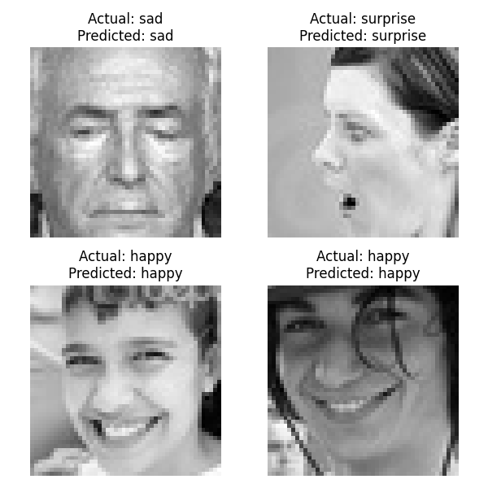

        <html>
        <head><title>Model Summary - 2024-04-10 14:26:10</title></head>
        <body>
        <h1>Model Configuration</h1>
        <pre>model:
  compile:
    learning_rate: 0.01
    optimizer: Adagrad
    optimizer_name: adam
  data:
    color_layers: 1
    color_mode: grayscale
    img_height: 48
    img_width: 48
    use_data_loaders: true
  layers:
  - filters: 64
    kernel_size:
    - 2
    - 2
    padding: same
    type: Conv2D
  - type: BatchNormalization
  - alpha: 0.1
    type: LeakyReLU
  - pool_size:
    - 2
    - 2
    type: MaxPooling2D
  - filters: 128
    kernel_size:
    - 2
    - 2
    padding: same
    type: Conv2D
  - type: BatchNormalization
  - alpha: 0.1
    type: LeakyReLU
  - pool_size:
    - 2
    - 2
    type: MaxPooling2D
  - filters: 256
    kernel_size:
    - 2
    - 2
    padding: same
    type: Conv2D
  - type: BatchNormalization
  - alpha: 0.1
    type: LeakyReLU
  - pool_size:
    - 2
    - 2
    type: MaxPooling2D
  - filters: 512
    kernel_size:
    - 2
    - 2
    padding: same
    type: Conv2D
  - type: BatchNormalization
  - alpha: 0.1
    type: LeakyReLU
  - pool_size:
    - 2
    - 2
    type: MaxPooling2D
  - filters: 128
    kernel_size:
    - 2
    - 2
    padding: same
    type: Conv2D
  - type: BatchNormalization
  - alpha: 0.1
    type: LeakyReLU
  - pool_size:
    - 2
    - 2
    type: MaxPooling2D
  - type: Flatten
  - activation: relu
    type: Dense
    units: 512
  - activation: relu
    type: Dense
    units: 128
  - type: Dense
    units: 64
  - type: BatchNormalization
  - type: ReLU
  - activation: softmax
    type: Dense
    units: 4
  train:
    batch_size: 16
    epochs: 40
    patience: 7
</pre>
        <h1>Model Summary</h1>
        <pre>Model: "sequential"
┏━━━━━━━━━━━━━━━━━━━━━━━━━━━━━━━━━━━━━━┳━━━━━━━━━━━━━━━━━━━━━━━━━━━━━┳━━━━━━━━━━━━━━━━━┓
┃ Layer (type)                         ┃ Output Shape                ┃         Param # ┃
┡━━━━━━━━━━━━━━━━━━━━━━━━━━━━━━━━━━━━━━╇━━━━━━━━━━━━━━━━━━━━━━━━━━━━━╇━━━━━━━━━━━━━━━━━┩
│ conv2d (Conv2D)                      │ (None, 48, 48, 64)          │             320 │
├──────────────────────────────────────┼─────────────────────────────┼─────────────────┤
│ batch_normalization                  │ (None, 48, 48, 64)          │             256 │
│ (BatchNormalization)                 │                             │                 │
├──────────────────────────────────────┼─────────────────────────────┼─────────────────┤
│ leaky_re_lu (LeakyReLU)              │ (None, 48, 48, 64)          │               0 │
├──────────────────────────────────────┼─────────────────────────────┼─────────────────┤
│ max_pooling2d (MaxPooling2D)         │ (None, 24, 24, 64)          │               0 │
├──────────────────────────────────────┼─────────────────────────────┼─────────────────┤
│ conv2d_1 (Conv2D)                    │ (None, 24, 24, 128)         │          32,896 │
├──────────────────────────────────────┼─────────────────────────────┼─────────────────┤
│ batch_normalization_1                │ (None, 24, 24, 128)         │             512 │
│ (BatchNormalization)                 │                             │                 │
├──────────────────────────────────────┼─────────────────────────────┼─────────────────┤
│ leaky_re_lu_1 (LeakyReLU)            │ (None, 24, 24, 128)         │               0 │
├──────────────────────────────────────┼─────────────────────────────┼─────────────────┤
│ max_pooling2d_1 (MaxPooling2D)       │ (None, 12, 12, 128)         │               0 │
├──────────────────────────────────────┼─────────────────────────────┼─────────────────┤
│ conv2d_2 (Conv2D)                    │ (None, 12, 12, 256)         │         131,328 │
├──────────────────────────────────────┼─────────────────────────────┼─────────────────┤
│ batch_normalization_2                │ (None, 12, 12, 256)         │           1,024 │
│ (BatchNormalization)                 │                             │                 │
├──────────────────────────────────────┼─────────────────────────────┼─────────────────┤
│ leaky_re_lu_2 (LeakyReLU)            │ (None, 12, 12, 256)         │               0 │
├──────────────────────────────────────┼─────────────────────────────┼─────────────────┤
│ max_pooling2d_2 (MaxPooling2D)       │ (None, 6, 6, 256)           │               0 │
├──────────────────────────────────────┼─────────────────────────────┼─────────────────┤
│ conv2d_3 (Conv2D)                    │ (None, 6, 6, 512)           │         524,800 │
├──────────────────────────────────────┼─────────────────────────────┼─────────────────┤
│ batch_normalization_3                │ (None, 6, 6, 512)           │           2,048 │
│ (BatchNormalization)                 │                             │                 │
├──────────────────────────────────────┼─────────────────────────────┼─────────────────┤
│ leaky_re_lu_3 (LeakyReLU)            │ (None, 6, 6, 512)           │               0 │
├──────────────────────────────────────┼─────────────────────────────┼─────────────────┤
│ max_pooling2d_3 (MaxPooling2D)       │ (None, 3, 3, 512)           │               0 │
├──────────────────────────────────────┼─────────────────────────────┼─────────────────┤
│ conv2d_4 (Conv2D)                    │ (None, 3, 3, 128)           │         262,272 │
├──────────────────────────────────────┼─────────────────────────────┼─────────────────┤
│ batch_normalization_4                │ (None, 3, 3, 128)           │             512 │
│ (BatchNormalization)                 │                             │                 │
├──────────────────────────────────────┼─────────────────────────────┼─────────────────┤
│ leaky_re_lu_4 (LeakyReLU)            │ (None, 3, 3, 128)           │               0 │
├──────────────────────────────────────┼─────────────────────────────┼─────────────────┤
│ max_pooling2d_4 (MaxPooling2D)       │ (None, 1, 1, 128)           │               0 │
├──────────────────────────────────────┼─────────────────────────────┼─────────────────┤
│ flatten (Flatten)                    │ (None, 128)                 │               0 │
├──────────────────────────────────────┼─────────────────────────────┼─────────────────┤
│ dense (Dense)                        │ (None, 512)                 │          66,048 │
├──────────────────────────────────────┼─────────────────────────────┼─────────────────┤
│ dense_1 (Dense)                      │ (None, 128)                 │          65,664 │
├──────────────────────────────────────┼─────────────────────────────┼─────────────────┤
│ dense_2 (Dense)                      │ (None, 64)                  │           8,256 │
├──────────────────────────────────────┼─────────────────────────────┼─────────────────┤
│ batch_normalization_5                │ (None, 64)                  │             256 │
│ (BatchNormalization)                 │                             │                 │
├──────────────────────────────────────┼─────────────────────────────┼─────────────────┤
│ re_lu (ReLU)                         │ (None, 64)                  │               0 │
├──────────────────────────────────────┼─────────────────────────────┼─────────────────┤
│ dense_3 (Dense)                      │ (None, 4)                   │             260 │
└──────────────────────────────────────┴─────────────────────────────┴─────────────────┘
 Total params: 1,096,452 (4.18 MB)
 Trainable params: 1,094,148 (4.17 MB)
 Non-trainable params: 2,304 (9.00 KB)
</pre>
        <h2>Test Accuracy</h2>
        <p>
1/8 ━━━━━━━━━━━━━━━━━━━━ 0s 14ms/step - accuracy: 0.8750 - loss: 0.3712
8/8 ━━━━━━━━━━━━━━━━━━━━ 0s 2ms/step - accuracy: 0.8363 - loss: 0.5178 

1/8 ━━━━━━━━━━━━━━━━━━━━ 2s 382ms/step
8/8 ━━━━━━━━━━━━━━━━━━━━ 0s 2ms/step  
</p>
        <h2>Accuracy Plot</h2>
        
        <h2>Classification Report</h2>
        <pre>              precision    recall  f1-score   support

       happy       0.90      0.88      0.89        32
     neutral       0.68      0.81      0.74        32
         sad       0.79      0.69      0.73        32
    surprise       0.94      0.91      0.92        32

    accuracy                           0.82       128
   macro avg       0.83      0.82      0.82       128
weighted avg       0.83      0.82      0.82       128

</pre>
        <h2>History</h2>
        <pre>Epoch 1: accuracy: 0.2973, loss: 1.3730, val_accuracy: 0.3785, val_loss: 1.2549, learning_rate: 0.0100
Epoch 2: accuracy: 0.3865, loss: 1.2567, val_accuracy: 0.2479, val_loss: 1.5261, learning_rate: 0.0100
Epoch 3: accuracy: 0.4811, loss: 1.1165, val_accuracy: 0.5164, val_loss: 1.1265, learning_rate: 0.0100
Epoch 4: accuracy: 0.5290, loss: 1.0286, val_accuracy: 0.6227, val_loss: 0.8368, learning_rate: 0.0100
Epoch 5: accuracy: 0.5687, loss: 0.9677, val_accuracy: 0.6325, val_loss: 0.8350, learning_rate: 0.0100
Epoch 6: accuracy: 0.5825, loss: 0.9366, val_accuracy: 0.5996, val_loss: 0.9569, learning_rate: 0.0100
Epoch 7: accuracy: 0.6016, loss: 0.9117, val_accuracy: 0.6367, val_loss: 0.8531, learning_rate: 0.0100
Epoch 8: accuracy: 0.6268, loss: 0.8806, val_accuracy: 0.6170, val_loss: 0.9504, learning_rate: 0.0100
Epoch 9: accuracy: 0.6493, loss: 0.8423, val_accuracy: 0.6588, val_loss: 0.7975, learning_rate: 0.0100
Epoch 10: accuracy: 0.6580, loss: 0.8289, val_accuracy: 0.6456, val_loss: 0.8576, learning_rate: 0.0100
Epoch 11: accuracy: 0.6697, loss: 0.8004, val_accuracy: 0.6387, val_loss: 0.8445, learning_rate: 0.0100
Epoch 12: accuracy: 0.6803, loss: 0.7860, val_accuracy: 0.6570, val_loss: 0.8296, learning_rate: 0.0100
Epoch 13: accuracy: 0.6787, loss: 0.7813, val_accuracy: 0.7036, val_loss: 0.7408, learning_rate: 0.0100
Epoch 14: accuracy: 0.6859, loss: 0.7669, val_accuracy: 0.7334, val_loss: 0.6525, learning_rate: 0.0100
Epoch 15: accuracy: 0.6880, loss: 0.7604, val_accuracy: 0.6946, val_loss: 0.7549, learning_rate: 0.0100
Epoch 16: accuracy: 0.6891, loss: 0.7571, val_accuracy: 0.7384, val_loss: 0.6442, learning_rate: 0.0100
Epoch 17: accuracy: 0.6981, loss: 0.7382, val_accuracy: 0.6628, val_loss: 0.8307, learning_rate: 0.0100
Epoch 18: accuracy: 0.7013, loss: 0.7282, val_accuracy: 0.7139, val_loss: 0.7143, learning_rate: 0.0100
Epoch 19: accuracy: 0.7004, loss: 0.7394, val_accuracy: 0.7328, val_loss: 0.6592, learning_rate: 0.0100
Epoch 20: accuracy: 0.7031, loss: 0.7290, val_accuracy: 0.6946, val_loss: 0.7646, learning_rate: 0.0100
Epoch 21: accuracy: 0.7079, loss: 0.7179, val_accuracy: 0.7366, val_loss: 0.6579, learning_rate: 0.0100
Epoch 22: accuracy: 0.7308, loss: 0.6659, val_accuracy: 0.7583, val_loss: 0.6021, learning_rate: 0.0020
Epoch 23: accuracy: 0.7339, loss: 0.6530, val_accuracy: 0.7627, val_loss: 0.6070, learning_rate: 0.0020
Epoch 24: accuracy: 0.7466, loss: 0.6398, val_accuracy: 0.7621, val_loss: 0.6048, learning_rate: 0.0020
Epoch 25: accuracy: 0.7433, loss: 0.6339, val_accuracy: 0.7539, val_loss: 0.6240, learning_rate: 0.0020
Epoch 26: accuracy: 0.7456, loss: 0.6293, val_accuracy: 0.7635, val_loss: 0.6075, learning_rate: 0.0020
Epoch 27: accuracy: 0.7478, loss: 0.6249, val_accuracy: 0.7639, val_loss: 0.5872, learning_rate: 0.0020
Epoch 28: accuracy: 0.7507, loss: 0.6238, val_accuracy: 0.7601, val_loss: 0.5954, learning_rate: 0.0020
Epoch 29: accuracy: 0.7572, loss: 0.6133, val_accuracy: 0.7653, val_loss: 0.5924, learning_rate: 0.0020
Epoch 30: accuracy: 0.7480, loss: 0.6189, val_accuracy: 0.7591, val_loss: 0.5925, learning_rate: 0.0020
Epoch 31: accuracy: 0.7550, loss: 0.6113, val_accuracy: 0.7629, val_loss: 0.6026, learning_rate: 0.0020
Epoch 32: accuracy: 0.7568, loss: 0.6101, val_accuracy: 0.7537, val_loss: 0.6269, learning_rate: 0.0020
Epoch 33: accuracy: 0.7636, loss: 0.5955, val_accuracy: 0.7689, val_loss: 0.5796, learning_rate: 0.0004
Epoch 34: accuracy: 0.7645, loss: 0.5930, val_accuracy: 0.7703, val_loss: 0.5783, learning_rate: 0.0004
Epoch 35: accuracy: 0.7614, loss: 0.5886, val_accuracy: 0.7709, val_loss: 0.5818, learning_rate: 0.0004
Epoch 36: accuracy: 0.7674, loss: 0.5896, val_accuracy: 0.7709, val_loss: 0.5843, learning_rate: 0.0004
Epoch 37: accuracy: 0.7654, loss: 0.5822, val_accuracy: 0.7691, val_loss: 0.5817, learning_rate: 0.0004
Epoch 38: accuracy: 0.7633, loss: 0.5871, val_accuracy: 0.7675, val_loss: 0.5749, learning_rate: 0.0004
Epoch 39: accuracy: 0.7678, loss: 0.5796, val_accuracy: 0.7713, val_loss: 0.5829, learning_rate: 0.0004
Epoch 40: accuracy: 0.7656, loss: 0.5923, val_accuracy: 0.7691, val_loss: 0.5811, learning_rate: 0.0004
</pre>
        <h2>Confusion Matrix</h2>
        
        <h2>Predicted Images</h2>
        
        </body>
        </html>
        